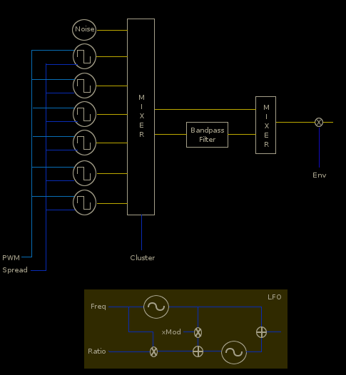
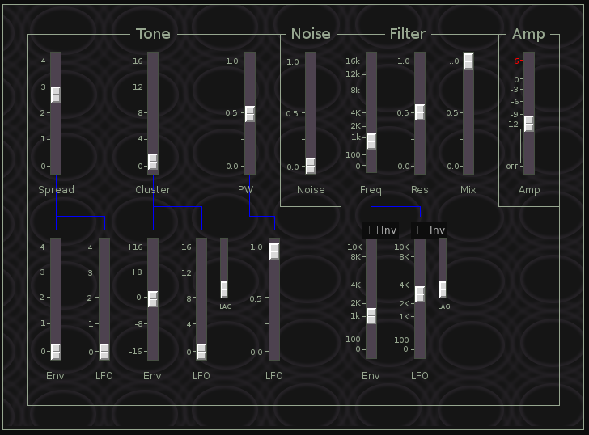
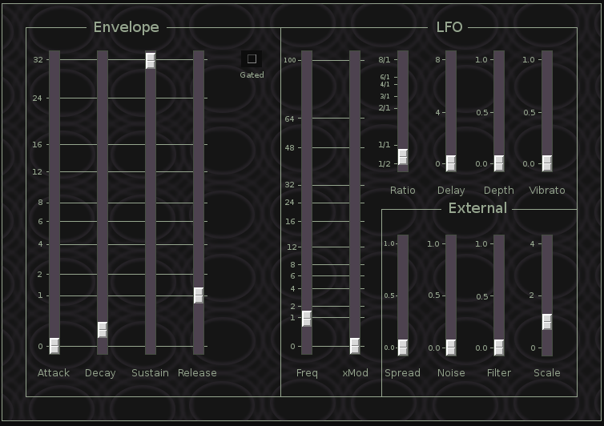

KLSTR
 Previous( Io )
Next( Klstr2 )
Home
Contents
Synth Catalog
Previous( Io )
Next( Klstr2 )
Home
Contents
Synth Catalog
klstr is an experimental instrument influenced by cymbal simulation on early, pre-sampler, drum machines. The technique takes several pulse waves tuned to non-harmonic intervals. These are then band pass filtered to produce a dense cluster of upper partials. Finally a percussive envelope is applied.
Klstr generalizes this approach and produces a wide range of interesting sounds, whether it produces realistic cymbals is arguable.
Kstr Tone Panel
Spread is a single parameter which sets the relative frequencies of the 6 pulse waves. The frequencies are scaled such that they are harmonic at both the minimum and maximum positions of the Spread slider. Most intermediate positions produce non-harmonic tones. Spread may be modulated by either the Envelope, LFO or external signal.
Cluster sets the mix between the 6 pulse waves. The Cluster parameter uses a non-linear transform which produces a rippling effect as the cluster value changes. Cluster may be modulated by the Envelope or LFO. The lag parameter smooths the Cluster modulation signal.
Noise linear Noise level.
The filter section consist of a mixer which combines the band-pass filtered and non-filtered signals.
Freq Band pass filter center frequency may be modulated by the Envelope, LFO or external signal. The lag parameter smooths the filter control signal.
Res Filter resonance.
Mix Sets mix between filtered and non-filtered signal. The filter is bypassed at the lowest slider position.
Amp Output amplitude. See Volume slider
Klstr Mod Panel
The single ADSR envelope is used both for modulation and output envelope.
Attack Decay & Release See Envelope Time Slider
Sustain Envelope Sustain.
The LFO section combines 2 LFOs for complex control signals. The two LFOs are mixed equally to a composite signal.
Freq LFO1 frequency in Hertz.
xMod Amount of LFO1 frequency modulation of LFO2.
Ratio The frequency of LFO2 relative to LFO1.
Delay LFO onset delay.
Depth LFO amplitude, after delay period.
Vibrato LFO vibrato depth.
The External section controls the distribution of an external control signal to various destinations.
Spread External signal -> Spread
Noise External signal -> Nose amp
Filter External signal -> Filter frequency
Scale Scale factor applied to external signal
Klstr Parameters
- amp, overall linear amplitude (0,2)
- lfoFreq, LFO1 frequency (0,100)
- lfo2FreqRatio, LFO2 frequency ratio (1/2,8)
- lfoXMod, LFO1 to LFO2 modulation (0,100)
- lfoDelay, LFO onset delay, seconds (0,8)
- lfoDepth, LFO depth (0,1)
- vibrato, Vibrato depth (0,1)
- attack, Attack time (0,32)
- decay, Decay time (0,32)
- sustain, Envelope sustain level (0,1)
- release, Envelope release time (0,32)
- pw, Pulse width (0,1)
- pwLfo, LFO to pulse width modulation (0,1)
- spread, Pulse frequency spread (0,4)
- spreadLfo, LFO modulation of spread (0,4)
- spreadEnv, Envelope modulation of spread(0,4)
- cluster, Pulse wave mix (non-linear) (0,16)
- clusterLfo, LFO modulation of cluster (0,16)
- clusterEnv, Envelope modulation of cluster (-16,+16)
- clusterLag, Cluster lag time (0,1)
- filterMix, Filter mix (0,1)
- filterFreq, Band pass filter frequency (0,16k)
- filterLfo, LFO to filter frequency (-10k,+10k)
- filterEnv, Envelope to filter frequency (-10K,+10K)
- filterLag, Filter control lag time (0,1)
- res, Filter resonance (0,1)
- noiseAmp, Noise linear amp (0,1)
- xScale, External scale factor (0,4)
- xToSpread, External signal to spread(0,1)
- xToNoise, External signal to Noise amp (0,1)
- xToFilter, External signal to Filter frequency(0,1)
Previous( Io ) Next( Klstr2 ) Home Contents Synth Catalog